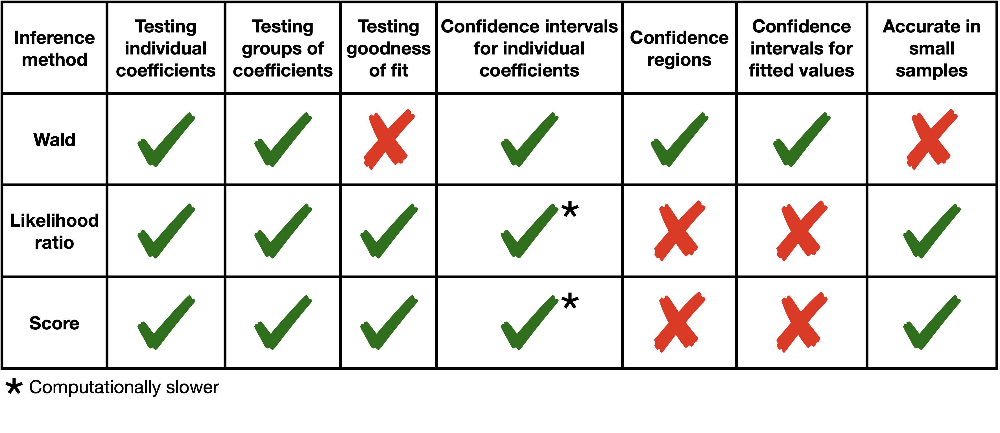

22 Inference in GLMs
22.1 Preliminaries
22.1.1 Inferential goals
There are two types of inferential goals: hypothesis testing and confidence interval/region construction.
22.1.1.1 Hypothesis testing
- Single coefficient: \(H_0: \beta_j = \beta_j^0\) versus \(H_1: \beta_j \neq \beta_j^0\) for some \(\beta_j^0 \in \mathbb{R}\).
- Group of coefficients: \(H_0: \boldsymbol{\beta}_S = \boldsymbol{\beta}_S^0\) versus \(H_1: \boldsymbol{\beta}_S \neq \boldsymbol{\beta}_S^0\) for some \(S \subset \{0,\dots,p-1\}\) and some \(\boldsymbol{\beta}_S^0 \in \mathbb{R}^{|S|}\).
- Goodness of fit: The goodness of fit null hypothesis is that the GLM (20.1) is correctly specified. Consider the saturated model:
\[ y_i \overset{\text{ind}} \sim \text{EDM}(\mu_i, \phi_0/w_i) \quad \text{for} \quad i = 1,\dots,n. \tag{22.1}\]
Let
\[ \mathcal{M}^{\text{GLM}} \equiv \{\boldsymbol{\mu}: \mu_i = \boldsymbol{x}_{i*}^T \boldsymbol{\beta} + o_i \text{ for some } \boldsymbol{\beta} \in \mathbb{R}^p\} \]
be the set of mean vectors consistent with the GLM. Then, the goodness of fit testing problem is \(H_0: \boldsymbol{\mu} \in \mathcal{M}^{\text{GLM}}\) versus \(H_1: \boldsymbol{\mu} \notin \mathcal{M}^{\text{GLM}}\).
22.1.1.2 Confidence interval/region construction
- Confidence interval for a single coefficient: Here, the goal is to produce a confidence interval \(\text{CI}(\beta_j)\) for a coefficient \(\beta_j\).
- Confidence region for a group of coefficients: Here, the goal is to produce a confidence region \(\text{CR}(\boldsymbol{\beta}_S)\) for a group of coefficients \(\boldsymbol{\beta}_S\).
- Confidence interval for a fitted value: In GLMs, fitted values can either be considered for parameters on the linear scale (\(\eta_i = \boldsymbol{x}_{i*}^T \boldsymbol{\beta} + o_i\)) or the mean scale (\(\mu_i = g^{-1}(\boldsymbol{x}_{i*}^T \boldsymbol{\beta} + o_i)\)). The goal, then, is to produce confidence intervals \(\text{CI}(\eta_i)\) or \(\text{CI}(\mu_i)\) for \(\eta_i\) or \(\mu_i\), respectively.
22.1.2 Inferential tools
Inference in GLMs is based on asymptotic likelihood theory. These asymptotics can be based on large-sample asymptotics or small-dispersion asymptotics. Large-sample asymptotics are applicable for testing hypotheses and estimating parameters within models where the number of parameters is fixed while the sample size grows. Small-dispersion asymptotics are applicable for testing hypotheses and estimating parameters within models where the dispersion is small, regardless of the sample size. Large-sample asymptotics apply to testing and estimating coefficients in GLMs (20.1) with a fixed number of parameters as the sample size grows, but not to testing goodness of fit. Indeed, goodness-of-fit tests refer to the saturated model (22.1), whose number of parameters grows with \(n\). Small-dispersion asymptotics, on the other hand, apply to goodness-of-fit testing.
Hypothesis tests (and, by inversion, confidence intervals) can be constructed in three asymptotically equivalent ways: Wald tests, likelihood ratio tests (LRT), and score tests. These tests can be justified using either large-sample or small-dispersion asymptotics, depending on the context. Despite their asymptotic equivalence, in finite samples, some tests may be preferable to others (though for normal linear models, these tests are equivalent in finite samples as well). See Figure 22.1.

22.2 Wald inference
Wald inference is based on the following asymptotic normality statement:
\[ \boldsymbol{\widehat \beta} \overset{\cdot}{\sim} N(\boldsymbol{\beta}, \boldsymbol{I}^{-1}(\boldsymbol{\beta})) = N(\boldsymbol{\beta}, \phi_0(\boldsymbol{X}^T \boldsymbol{W}(\boldsymbol{\beta}) \boldsymbol{X})^{-1}), \tag{22.2}\]
recalling our derivation of the Fisher information from equation (21.4). This approximation can be justified via large-sample asymptotics or small-dispersion asymptotics. Wald inference is easy to carry out, and for this reason, it is considered the default type of inference. However, as we will see in Unit 5, it also tends to be the least accurate in small samples. Furthermore, Wald tests are usually not applied for testing goodness of fit.
22.2.1 Wald test for \(\beta_j = \beta_j^0\) (known \(\phi_0\))
Based on the Wald approximation (22.2), under the null hypothesis, we have:
\[ \widehat \beta_j \overset{\cdot}{\sim} N(\beta_j^0, \phi_0[(\boldsymbol{X}^T \boldsymbol{W}(\boldsymbol{\beta}) \boldsymbol{X})^{-1}]_{jj}) \approx N(\beta_j^0, \phi_0[(\boldsymbol{X}^T \boldsymbol{W}(\boldsymbol{\widehat \beta}) \boldsymbol{X})^{-1}]_{jj}) \equiv N(0, \text{SE}(\beta_j)^2), \]
where we have used a plug-in estimator of the variance. This leads us to the Wald \(z\)-test:
\[ \phi(\boldsymbol{X}, \boldsymbol{y}) \equiv 1\left(\left|\frac{\widehat \beta_j - \beta_j^0}{\text{SE}(\beta_j)}\right| > z_{1-\alpha/2}\right). \]
Since a one-dimensional parameter is being tested, we can make the test one-sided if desired.
22.2.2 Wald test for \(\boldsymbol{\beta}_S = \boldsymbol{\beta}_S^0\) (known \(\phi_0\))
Extending the reasoning above, we have under the null hypothesis that:
\[ \boldsymbol{\widehat \beta}_S \overset{\cdot}{\sim} N(\boldsymbol{\beta}_S^0, \phi_0[(\boldsymbol{X}^T \boldsymbol{W}(\boldsymbol{\beta}) \boldsymbol{X})^{-1}]_{S,S}) \approx N(\boldsymbol{\beta}_S^0, \phi_0[(\boldsymbol{X}^T \boldsymbol{W}(\boldsymbol{\widehat \beta}) \boldsymbol{X})^{-1}]_{S,S}), \]
and therefore:
\[ \frac{1}{\phi_0} (\boldsymbol{\widehat \beta}_S - \boldsymbol{\beta}_S^0)^T \left([(\boldsymbol{X}^T \boldsymbol{W}(\boldsymbol{\widehat \beta}) \boldsymbol{X})^{-1}]_{S,S}\right)^{-1}(\boldsymbol{\widehat \beta}_S - \boldsymbol{\beta}_S^0) \overset{\cdot}{\sim} \chi^2_{|S|}. \]
Hence, we have the Wald \(\chi^2\) test:
\[ \phi(\boldsymbol{X}, \boldsymbol{y}) \equiv 1\left(\frac{1}{\phi_0} (\boldsymbol{\widehat \beta}_S - \boldsymbol{\beta}_S^0)^T \left([(\boldsymbol{X}^T \boldsymbol{W}(\boldsymbol{\widehat \beta}) \boldsymbol{X})^{-1}]_{S,S}\right)^{-1}(\boldsymbol{\widehat \beta}_S - \boldsymbol{\beta}_S^0) > \chi^2_{|S|}(1-\alpha)\right). \]
22.2.3 Wald confidence interval for \(\beta_j\) (known \(\phi_0\))
Inverting the Wald test for \(\beta_j\), we get a Wald confidence interval:
\[ \text{CI}(\beta_j) \equiv \widehat \beta_j \pm z_{1-\alpha/2} \cdot \text{SE}(\beta_j), \quad \text{where} \quad \text{SE}(\beta_j) \equiv \sqrt{\phi_0[(\boldsymbol{X}^T \boldsymbol{W}(\boldsymbol{\widehat \beta}) \boldsymbol{X})^{-1}]_{jj}}. \tag{22.3}\]
22.2.4 Wald confidence region for \(\boldsymbol{\beta}_S\) (known \(\phi_0\))
By inverting the test of \(H_0: \boldsymbol{\beta}_S = \boldsymbol{\beta}_S^0\), we get the Wald confidence region:
\[ \text{CR}(\boldsymbol{\beta}_S) \equiv \left\{\boldsymbol{\beta}_S: \frac{1}{\phi_0} (\boldsymbol{\widehat \beta}_S - \boldsymbol{\beta}_S)^T \left([(\boldsymbol{X}^T \boldsymbol{W}(\boldsymbol{\widehat \beta}) \boldsymbol{X})^{-1}]_{S,S}\right)^{-1}(\boldsymbol{\widehat \beta}_S - \boldsymbol{\beta}_S) \leq \chi^2_{|S|}(1-\alpha)\right\}. \]
If \(S = \{0, 1, \dots, p-1\}\), we are left with:
\[ \text{CR}(\boldsymbol{\beta}_S) \equiv \left\{\boldsymbol{\beta}: \frac{1}{\phi_0} (\boldsymbol{\widehat \beta} - \boldsymbol{\beta})^T \boldsymbol{X}^T \boldsymbol{W}(\boldsymbol{\widehat \beta}) \boldsymbol{X} (\boldsymbol{\widehat \beta} - \boldsymbol{\beta}) \leq \chi^2_{p}(1-\alpha)\right\}. \]
22.2.5 Wald confidence intervals for \(\eta_i\) and \(\mu_i\) (known \(\phi_0\))
Given the Wald approximation Equation 22.2, we have:
\[ \widehat \eta_i \equiv o_i + \boldsymbol{x}_{i*}^T \boldsymbol{\widehat \beta} \overset{\cdot}{\sim} N(\eta_i, \phi_0 \cdot \boldsymbol{x}_{i*}^T (\boldsymbol{X}^T \boldsymbol{W}(\boldsymbol{\widehat \beta}) \boldsymbol{X})^{-1} \boldsymbol{x}_{i*}) \equiv N(\eta_i, \text{SE}(\eta_i)^2). \]
Hence, the Wald interval for \(\eta_i\) is:
\[ \text{CI}(\eta_i) \equiv o_i + \boldsymbol{x}_{i*}^T \boldsymbol{\widehat\beta} \pm z_{1-\alpha/2} \cdot \text{SE}(\eta_i), \quad \text{SE}(\eta_i) \equiv \sqrt{\phi_0 \boldsymbol{x}_{i*}^T (\boldsymbol{X}^T \boldsymbol{W}(\boldsymbol{\widehat \beta}) \boldsymbol{X})^{-1} \boldsymbol{x}_{i*}}. \]
A confidence interval for \(\mu_i \equiv \mathbb{E}_{\boldsymbol{\beta}}[y_i] = g^{-1}(\eta_i)\) can be obtained by applying the monotonic function \(g^{-1}\) to the endpoints of the confidence interval for \(\eta_i\). Note that the resulting confidence interval may be asymmetric. We can get a symmetric interval by applying the delta method, but this interval would be less accurate because it involves the delta method approximation in addition to the Wald approximation.
22.2.6 Wald inference when \(\phi_0\) is unknown
When \(\phi_0\) is unknown, we need to plug in an estimate \(\widetilde \phi_0\) (e.g. the deviance-based or Pearson-based estimate). Now our standard errors are \(\text{SE}(\beta_j) \equiv \sqrt{\widetilde \phi_0 \cdot [(\boldsymbol{X}^T \boldsymbol{W}(\boldsymbol{\widehat \beta}) \boldsymbol{X})^{-1}]_{jj}}\), and our test statistic for \(H_0: \beta_j = \beta_j^0\) is:
\[ \frac{\widehat \beta_j - \beta_j^0}{\sqrt{\widetilde \phi_0}\sqrt{[(\boldsymbol{X}^T \boldsymbol{W}(\boldsymbol{\widehat \beta}) \boldsymbol{X})^{-1}]_{jj}}}. \]
Unlike linear regression, it is not the case in general that \(\boldsymbol{\widehat \beta}\) and \(\widetilde \phi_0\) are independent. Nevertheless, they are asymptotically independent. Therefore, the above statistic is approximately distributed as \(t_{n-p}\). Hence, the test for \(H_0: \beta_j = \beta_j^0\) is:
\[ \phi(\boldsymbol{X}, \boldsymbol{y}) \equiv 1\left(\left|\frac{\widehat \beta_j - \beta_j^0}{\text{SE}(\beta_j)}\right| > t_{n-p}(1-\alpha/2)\right). \]
Likewise, we would replace \(z_{1-\alpha}\) by \(t_{n-p}(1-\alpha/2)\) for all tests and confidence intervals concerning univariate quantities. For multivariate quantities, we will get approximate \(F\) distributions instead of approximate \(\chi^2\) distributions. For example:
\[ \frac{\frac{1}{|S|}(\boldsymbol{\widehat \beta}_S - \boldsymbol{\beta}_S^0)^T \left([(\boldsymbol{X}^T \boldsymbol{W}(\boldsymbol{\widehat \beta}) \boldsymbol{X})^{-1}]_{S,S}\right)^{-1}(\boldsymbol{\widehat \beta}_S - \boldsymbol{\beta}_S^0)}{\widetilde \phi_0} \overset{\cdot}{\sim} F_{|S|, n-p}. \] ## Likelihood ratio inference {#sec-likelihood-ratio-inference}
22.2.7 Testing one or more coefficients (\(\phi_0\) known)
Let \(\ell(\boldsymbol{y}, \boldsymbol{\mu}) = -\frac{D(\boldsymbol{y}, \boldsymbol{\mu})}{2\phi_0} + C\) be the GLM log-likelihood (recall equation (21.6)). Let \(H_0: \boldsymbol{\beta}_S = \boldsymbol{\beta}_S^0\) be a null hypothesis about some subset of variables \(S \subset \{0, 1, \dots, p-1\}\), and let \(\boldsymbol{\widehat{\mu}}_{\text{-}S}\) be the maximum likelihood estimate under the null hypothesis. Likelihood ratio inference is based on the following asymptotic chi-square distribution:
\[ 2(\ell(\boldsymbol{y}, \boldsymbol{\widehat{\mu}}) - \ell(\boldsymbol{y}, \boldsymbol{\widehat{\mu}}_{\text{-}S})) = \frac{D(\boldsymbol{y}, \boldsymbol{\widehat{\mu}}_{\text{-}S}) - D(\boldsymbol{y}, \boldsymbol{\widehat{\mu}})}{\phi_0} \overset{\cdot}{\sim} \chi^2_{|S|}. \tag{22.4}\]
This approximation holds either in large samples (large-sample asymptotics) or in small samples but with small dispersion (small-dispersion asymptotics). The latter has to do with the fact that under small-dispersion asymptotics,
\[ \frac{d(y_i, \mu_i)}{\phi_0/w_i} \overset{\cdot}{\sim} \chi^2_1, \]
so
\[ \frac{D(\boldsymbol{y}, \boldsymbol{\mu})}{\phi_0} = \sum_{i = 1}^n \frac{d(y_i, \mu_i)}{\phi_0/w_i} \overset{\cdot}{\sim} \chi^2_n. \]
Suppose we wish to test the null hypothesis \(H_0: \boldsymbol{\beta}_S = \boldsymbol{\beta}_S^0\). Then, based on the approximation (22.4), we can define the likelihood ratio test:
\[ \phi(\boldsymbol{X}, \boldsymbol{y}) \equiv 1\left(\frac{D(\boldsymbol{y}, \boldsymbol{\widehat{\mu}}_{\text{-}S}) - D(\boldsymbol{y}, \boldsymbol{\widehat{\mu}})}{\phi_0} > \chi^2_{|S|}(1-\alpha)\right). \]
22.2.8 Confidence interval for a single coefficient
We can obtain a confidence interval for \(\beta_j\) by inverting the likelihood ratio test. Let \(\boldsymbol{\widehat{\mu}}_{\text{-}j}(\beta_j^0)\) be the fitted mean vector under the constraint \(\beta_j = \beta_j^0\). Then, inverting the likelihood ratio test gives us the confidence interval:
\[ \text{CI}(\beta_j) \equiv \left\{\beta_j: \frac{D(\boldsymbol{y}, \boldsymbol{\widehat{\mu}}_{\text{-}j}(\beta_j)) - D(\boldsymbol{y}, \boldsymbol{\widehat{\mu}})}{\phi_0} \leq \chi^2_{|S|}(1-\alpha)\right\}. \]
Likelihood ratio-based confidence intervals tend to be more accurate than Wald intervals, especially when the parameter is near the edge of the parameter space, but they require more computation because \(\boldsymbol{\widehat{\mu}}_{\text{-}j}(\beta_j)\) must be computed on a large grid of \(\beta_j\) values. If we wanted to create confidence regions for groups of parameters, this would become computationally intensive due to the curse of dimensionality.
22.2.9 Goodness of fit testing (\(\phi_0\) known)
For \(\phi_0\) known, we can also construct a goodness of fit test. To this end, we compare the deviances of the GLM and saturated model:
\[ \frac{D(\boldsymbol{y}, \boldsymbol{\widehat{\mu}}) - D(\boldsymbol{y}, \boldsymbol{y})}{\phi_0} = \frac{D(\boldsymbol{y}; \boldsymbol{\widehat{\mu}})}{\phi_0} \overset{\cdot}{\sim} \chi^2_{n-p}. \]
Note that the goodness of fit test is a significance test with respect to the saturated model Equation 22.1, which has \(n\) free parameters. Therefore, the number of free parameters increases with the sample size, so large-sample asymptotics cannot justify this test. Instead, we must rely on small-dispersion asymptotics.
22.2.10 Likelihood ratio inference for \(\phi_0\) unknown
If \(\phi_0\) is unknown, we can estimate it as discussed above and construct an \(F\)-statistic as follows:
\[ F \equiv \frac{(D(\boldsymbol{y}; \boldsymbol{\widehat{\mu}}_{\text{-}S}) - D(\boldsymbol{y}; \boldsymbol{\widehat{\mu}}))/|S|}{\widetilde{\phi}_0}. \]
In normal linear model theory, the null distribution of \(F\) is exactly \(F_{|S|, n-p}\). For GLMs, the null distribution of \(F\) is approximately \(F_{|S|, n-p}\). We can use this \(F\) distribution to construct hypothesis tests for groups of coefficients, or invert it to get a confidence interval for a single coefficient. We cannot construct a goodness of fit test in the case that \(\phi_0\) is unknown because the residual degrees of freedom would be used up to estimate \(\phi_0\) rather than to carry out inference.
22.3 Score-based inference
Score-based inference can be used for the same set of inferential tasks as likelihood ratio inference.
22.3.1 Testing multiple coefficients (\(\phi_0\) known)
Let \(H_0: \boldsymbol{\beta}_S = \boldsymbol{\beta}_S^0\) be a null hypothesis about a subset of variables \(S\), and let \(\boldsymbol{\widehat{\beta}}^0\) be the maximum likelihood estimate under this null hypothesis. Score test inference is based on the asymptotic approximation:
\[ U(\boldsymbol{\widehat{\beta}}^0)^T \boldsymbol{I}(\boldsymbol{\widehat{\beta}}^0)^{-1} U(\boldsymbol{\widehat{\beta}}^0) \overset{\cdot}{\sim} \chi^2_{|S|}, \]
recalling that \(U(\boldsymbol{\beta}) = \frac{\partial \ell(\boldsymbol{\beta})}{\partial \boldsymbol{\beta}}\) is the score vector. This approximation can be justified either by small-dispersion asymptotics or large-sample asymptotics (both based on the central limit theorem). Since:
\[ \boldsymbol{\widehat{\beta}}^0_{\text{-}S} = \underset{\boldsymbol{\beta}_{\text{-}S}}{\arg \max}\ \ell(\boldsymbol{\beta}^0_{S}, \boldsymbol{\beta}_{\text{-}S}), \]
it follows that:
\[ [U(\boldsymbol{\widehat{\beta}}^0)]_{\text{-}S} \equiv \frac{\partial \ell}{\partial \boldsymbol{\beta}_{\text{-}S}}(\boldsymbol{\widehat{\beta}}^0) = \frac{\partial \ell}{\partial \boldsymbol{\beta}_{\text{-}S}}(\boldsymbol{\beta}^0_{S}, \boldsymbol{\widehat{\beta}}_{\text{-}S}) = 0. \]
Hence, we have:
\[ U(\boldsymbol{\widehat{\beta}}^0)^T \boldsymbol{I}(\boldsymbol{\widehat{\beta}}^0)^{-1} U(\boldsymbol{\widehat{\beta}}^0) = [U(\boldsymbol{\widehat{\beta}}^0)]_S^T [\boldsymbol{I}(\boldsymbol{\widehat{\beta}}^0)^{-1}]_{S,S} [U(\boldsymbol{\widehat{\beta}}^0)]_S. \]
Recalling the expressions (21.2) and (21.4) for the score vector and information matrix, we have that:
\[ U(\boldsymbol{\widehat{\beta}}^0)^T \boldsymbol{I}(\boldsymbol{\widehat{\beta}}^0)^{-1} U(\boldsymbol{\widehat{\beta}}^0) = \frac{1}{\phi_0}(\boldsymbol{y} - \boldsymbol{\widehat{\mu}}^0)^T \boldsymbol{\widehat{W}}^0 \boldsymbol{\widehat{M}}^0 \boldsymbol{X}_{S,*}[(\boldsymbol{X}^T \boldsymbol{\widehat{W}}^0 \boldsymbol{X})^{-1}]_{S,S} \boldsymbol{X}_{S,*}^T \boldsymbol{\widehat{M}}^0 \boldsymbol{\widehat{W}}^0 (\boldsymbol{y} - \boldsymbol{\widehat{\mu}}^0). \]
Therefore, we arrive at the score test for \(H_0: \boldsymbol{\beta}_S = \boldsymbol{\beta}_S^0\):
\[ \small \phi(\boldsymbol{X}, \boldsymbol{y}) = 1\left((\boldsymbol{y} - \boldsymbol{\widehat{\mu}}^0)^T \boldsymbol{\widehat{W}}^0 \boldsymbol{\widehat{M}}^0 \boldsymbol{X}_{S,*}[(\boldsymbol{X}^T \boldsymbol{\widehat{W}}^0 \boldsymbol{X})^{-1}]_{S,S} \boldsymbol{X}_{S,*}^T \boldsymbol{\widehat{M}}^0 \boldsymbol{\widehat{W}}^0 (\boldsymbol{y} - \boldsymbol{\widehat{\mu}}^0) > \phi_0 \chi^2_{|S|}(1-\alpha)\right). \]
The nice thing about a score test is that the model need only be fit under the null hypothesis. If there are several variables one is considering adding to a model, the model need not be refit upon the addition of each variable.
22.3.2 Testing a single coefficient (\(\phi_0\) known)
If \(S = \{j\}\), the score test becomes univariate and can be based on the following normal approximation:
\[ \frac{\boldsymbol{x}_{j,*}^T \boldsymbol{\widehat{M}}^0 \boldsymbol{\widehat{W}}^0 (\boldsymbol{y} - \boldsymbol{\widehat{\mu}}^0)}{\sqrt{\phi_0 ([(\boldsymbol{X}^T \boldsymbol{\widehat{W}}^0 \boldsymbol{X})^{-1}]_{j, j})^{-1}}} \overset{\cdot}{\sim} N(0, 1). \tag{22.5}\]
Unlike its multivariate counterparts, we can construct not just a two-sided test but also one-sided tests based on this normal approximation. For example, below is a right-sided score test for \(H_0: \beta_j = \beta_j^0\):
\[ \phi(\boldsymbol{X}, \boldsymbol{y}) = 1\left(\frac{\boldsymbol{x}_{j,*}^T \boldsymbol{\widehat{M}}^0 \boldsymbol{\widehat{W}}^0 (\boldsymbol{y} - \boldsymbol{\widehat{\mu}}^0)}{\sqrt{\phi_0 ([(\boldsymbol{X}^T \boldsymbol{\widehat{W}}^0 \boldsymbol{X})^{-1}]_{j, j})^{-1}}} > z_{1-\alpha}\right). \]
22.3.3 Confidence interval for a single coefficient (\(\phi_0\) known)
Just as with the likelihood ratio test, it is possible to invert a score test for a single coefficient to obtain a confidence interval. It is uncommon to invert a multivariate test to obtain a confidence region for multiple coordinates of \(\boldsymbol{\beta}\), given the computationally expensive search across a grid of possible \(\boldsymbol{\beta}\) values.
22.3.4 Goodness of fit testing (\(\phi_0\) known)
We can view goodness of fit testing as testing a hypothesis about the coefficients in a GLM with \(\boldsymbol{X} = \boldsymbol{I}_{n \times n}\), which amounts to the saturated model that allows unrestricted means for each observation. Furthermore, the coefficient vector fitted under the null hypothesis amounts to fitting the GLM as usual. Therefore, we have:
\[ \begin{split} U(\boldsymbol{\widehat{\beta}})^T \boldsymbol{I}(\boldsymbol{\widehat{\beta}})^{-1} U(\boldsymbol{\widehat{\beta}}) &= \frac{1}{\phi_0}(\boldsymbol{y} - \boldsymbol{\widehat{\mu}})^T \boldsymbol{\widehat{W}} \boldsymbol{\widehat{M}} \boldsymbol{X} (\boldsymbol{X}^T \boldsymbol{\widehat{W}} \boldsymbol{X})^{-1} \boldsymbol{X}^T \boldsymbol{\widehat{M}} \boldsymbol{\widehat{W}} (\boldsymbol{y} - \boldsymbol{\widehat{\mu}}) \\ &= \frac{1}{\phi_0}(\boldsymbol{y} - \boldsymbol{\widehat{\mu}})^T \boldsymbol{\widehat{W}} \boldsymbol{\widehat{M}}^2 (\boldsymbol{y} - \boldsymbol{\widehat{\mu}}) \\ &= \frac{1}{\phi_0}(\boldsymbol{y} - \boldsymbol{\widehat{\mu}})^T \text{diag}\left( \frac{w_i}{V(\widehat{\mu}_i)} \right) (\boldsymbol{y} - \boldsymbol{\widehat{\mu}}) \\ &= \frac{1}{\phi_0}\sum_{i=1}^n \frac{w_i (y_i - \widehat{\mu}_i)^2}{V(\widehat{\mu}_i)} \equiv \frac{1}{\phi_0} X^2, \end{split} \]
where \(X^2\) is the Pearson chi-square statistic. Therefore, the score test for goodness of fit is:
\[ \phi(\boldsymbol{X}, \boldsymbol{y}) \equiv 1\left(X^2 \phi_0 > \chi^2_{n-p}(1-\alpha)\right). \]
In the context of contingency table analysis (see the next chapter), this test reduces to the Pearson chi-square test of independence between two categorical variables. This test was proposed in 1900; it was only pointed out about a century later that this is a score test (Smyth 2003).
22.3.5 Score test inference for \(\phi_0\) unknown
Score test inference for one or more coefficients \(\boldsymbol{\beta}_S\) can be achieved by replacing \(\phi_0\) with one of its estimators and replacing the normal and chi-square distributions with \(t\) and \(F\) distributions, respectively. For example, the score test for a single coefficient \(\beta_j\) is:
\[ \phi(\boldsymbol{X}, \boldsymbol{y}) = 1\left(\frac{\boldsymbol{x}_{j,*}^T \boldsymbol{\widehat{M}}^0 \boldsymbol{\widehat{W}}^0 (\boldsymbol{y} - \boldsymbol{\widehat{\mu}}^0)}{\sqrt{\widetilde{\phi}_0 ([(\boldsymbol{X}^T \boldsymbol{\widehat{W}}^0 \boldsymbol{X})^{-1}]_{j, j})^{-1}}} > t_{n-p}(1-\alpha)\right). \]
The \(t\) and \(F\) distributions are not exact in finite samples, but are better approximations than the normal and chi-square distributions. The score test for goodness of fit is not applicable in the case when \(\phi_0\) is unknown, similarly to the likelihood ratio test. Indeed, note the relationship between the Pearson goodness of fit test, which rejects when \(\frac{1}{\phi_0}X^2 > \chi^2_{n-p}(1-\alpha)\), and the Pearson estimator of the dispersion parameter: \(\widetilde{\phi}_0 \equiv \frac{X^2}{n-p}\). If we try to plug in the Pearson estimator for the dispersion into the Pearson goodness of fit test, we end up with a test statistic deterministically equal to \(n-p\). This reflects the fact that the residual degrees of freedom can either be used to estimate the dispersion or to test goodness of fit; they cannot be used for both.